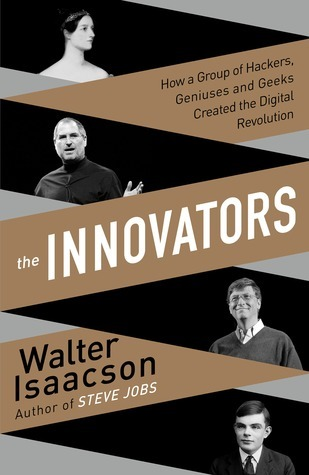
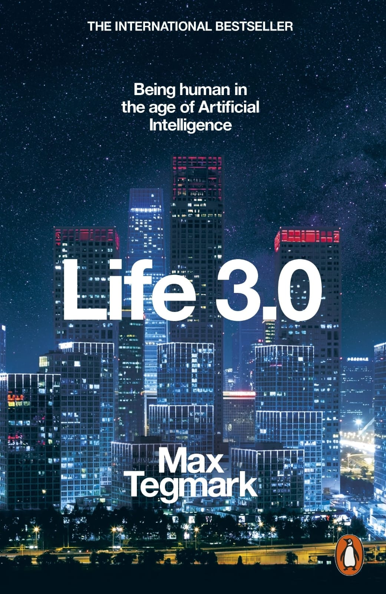
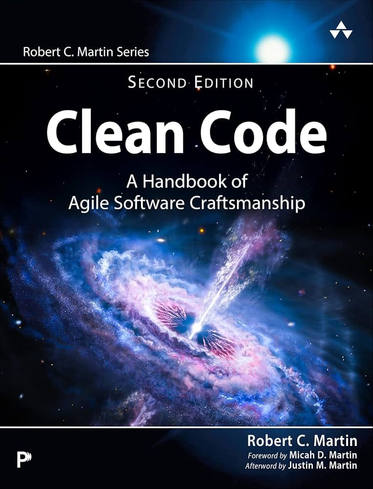

A Brief History of Time
Author: Stephen Hawking
Year: 1988
Category: Science & Technology
Rating: ⭐ 4.8/5
Pages: 256
Explores the origins of the universe, black holes, space-time, and the Big Bang theory in a way accessible to general readers.
Read Book
The Innovators
Author: Walter Isaacson
Year: 2014
Category: Science & Technology
Rating: ⭐ 4.6/5
Pages: 542
Tells the fascinating story of the pioneers who created the computer and the internet, highlighting how teamwork drives digital innovation.
Read Book
Life 3.0
Author: Max Tegmark
Year: 2017
Category: Science & Technology
Rating: ⭐ 4.5/5
Pages: 384
Examines how artificial intelligence will affect crime, war, justice, jobs, society, and our very sense of being human in the near future.
Read BookCosmos
Author: Carl Sagan
Year: 1980
Category: Science & Technology
Rating: ⭐ 4.9/5
Pages: 365
Traces 15 billion years of cosmic evolution and explores the mutual development of science and civilization across human history.
Read Book
Clean Code
Author: Robert C. Martin
Year: 2008
Category: Science & Technology
Rating: ⭐ 4.7/5
Pages: 464
A handbook of agile software craftsmanship that teaches developers how to write readable, maintainable, and efficient code.
Read Book